.png)
.png)
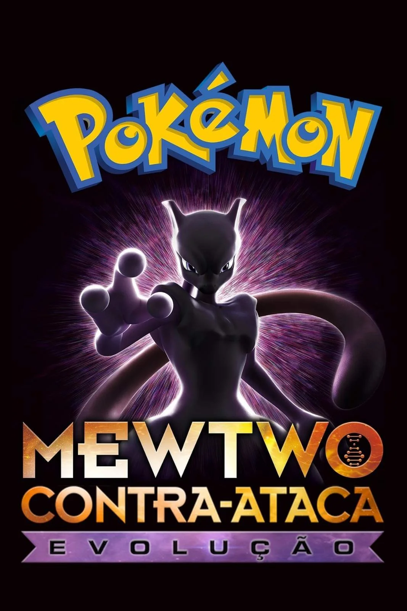
Pokémon: Mewtwo Strikes Back — Evolution é um filme de computação animada japonês de 2019 dirigida por Kunihiko Yuyama e Motonori Sakakibara. O filme é a 22ª edição da série de filmes de Pokémon este filme é um remake em CGI do primeiro filme da série. Foi primeiramente lançado no mercado americano no dia 4 de julho de 2019, antes de ser mundialmente na Netflix um ano depois.
Uma Pessoa Pode Fazer a Diferença. Sinopse Ash, treinador de pokémon, e seus companheiros têm a difícil tarefa de restaurar o equilíbrio das forças naturais na Terra para impedir que uma grande catástrofe aconteça. Para isso, precisam recuperar três pokémon que estão nas mãos de um vilão.
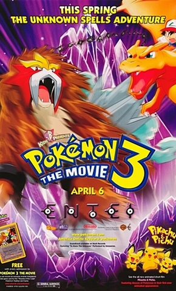
Pokémon 3: The Movie: Spell of the Unown, geralmente referido como Pokémon 3: The Movie, originalmente lançado no Japão como Pocket Monsters the Movie: Lord of the "UNKNOWN" Tower, ENTEI, é um filme de animação de 2000, dirigido por Kunihiko Yuyama. É o terceiro filme da franquia Pokémon, sendo lançado nos cinemas japoneses em 8 de julho de 2000. A adaptação em inglês foi lançada em 6 de abril de 2001, tendo sido produzida e distribuída pela 4Kids Entertainment e Warner Bros., respectivamente.
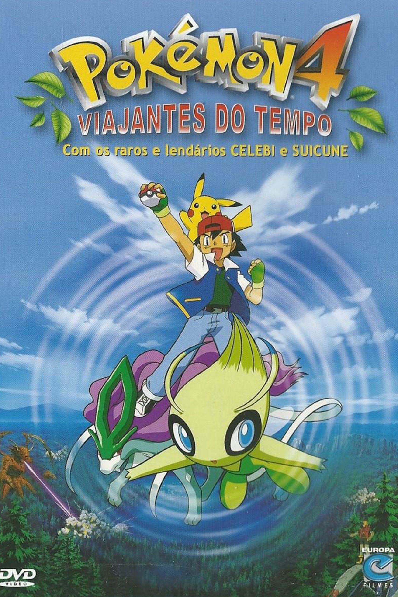
Viajantes do Tempo - Celebi, A Voz da Floresta é a quarta longa-metragem de Pokémon. Estreiou nos cinemas japoneses no dia 7 de Julho de 2001, E nos cinemas norte-americanos em 11 de outubro de 2002. O filme começa com uma introdução guiada por Brock, que apresenta o mundo Pokémon e as inúmeras criaturas fantásticas que habitam esse lugar. Brock também apresenta Ash Ketchum, orgulho da Cidade de Pallet, que parte para sua jornada Pokémon junto com Pikachu, Misty, e o próprio Brock
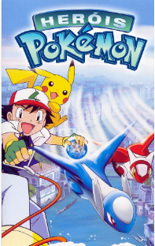
Alto Mare é uma ilha muito diferente. O estilo, a arquitetura, a localidade e até mesmo pelo que é famosa: uma cidade construída sobre a superfície da água. A beleza e os locais de Alto Mare deram-lhe o título de “A capital das águas”. Mais há algo por trás desta bela cidade... Uma lenda, relacionada aos Pokémon Irmãos Infinito, Latias e Latios. Eles protegem um tesouro, a Lágrima do Coração. O que acontecerá se ela cair em mãos erradas? É isto que Ash, Misty, Brock e Pikachu deveram impedir a qualquer custo. Mas eles não estarão sozinhos.
O enredo gira em torno da Equipe Rocket e sua mais nova base. Os Pokémon da Equipe Rocket, com o objetivo de proporcionar entretenimento para Giovanni, capturam três Whismur. Para forçar os Whismur a cooperar, Meowth tem um bastão que, quando um botão é pressionado, faz os Pokémon dançar incontrolavelmente. Enquanto isso, dentro da base, Pikachu, Treecko, Torchic, Mudkip e Lotad tentam libertar os Whismur. Uma das piadas do curta é sobre o botão do bastão, que é ativado e desativado por acidente, fazendo os Pokémon dançar, o que leva à destruição acidental da base. Eventualmente, um Ludicolo e um Loudred também se envolvem.
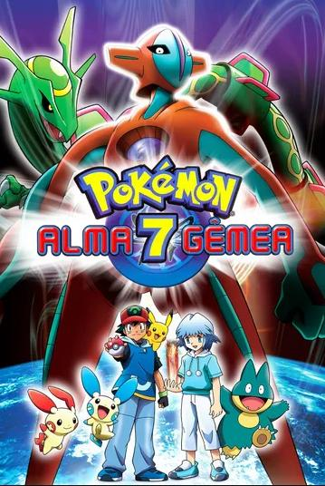
Depois de quatro anos de regeneração, Deoxys, um Pokémon espacial que chegou a Terra através de um meteóro, chega a cidade de LaRousse a procura de algo, sem se preocupar com humanos, Pokémons ou máquinas. O culpado da quase destruição de Deoxys, Rayquaza, um Pokémon lendário que vive nos limites da atmosfera terrestre, enfrenta novamente o Pokémon espacial e seus clones para garantir seu território. Mas afinal, o que Deoxys procura na cidade com tanta determinação? Enquanto Deoxys e Rayquaza trocam ataques poderosos, destruindo parte da cidade, Ash e seus amigos precisam novamente agir contra o tempo para salvar o dia e ajudar um garoto chamado Tory a vencer seu trauma de infância, que o deixa apavorado perto de Pokémons. Esse é o primeiro filme Pokémon que não foi lançado junto com um mini-filme de Pikachu
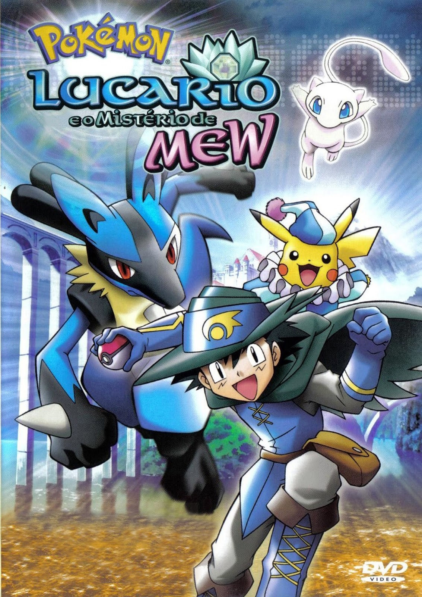
Sinopse Livre Pokémon: Lucario E O Mistério De Mew acompanha Ash e seus amigos na cidade de Rotha durante um festival para homenagear o "Herói de Hadou". Porém, Pikachu é levado contra sua vontade pelo poderoso Mew.
Sinopse Livre Pokémon Ranger e o Lendário Templo do Mar acompanha Ash e seus amigos que precisarão contar com a ajuda de um pokémon ranger, dos protetores do Templo do mar e do misterioso pokémon Menpahy para proteger uma relíquia valiosa que o grande pirata Phantom planeja capturar um raro ovo Pokémon para roubar a Coroa do Mar.
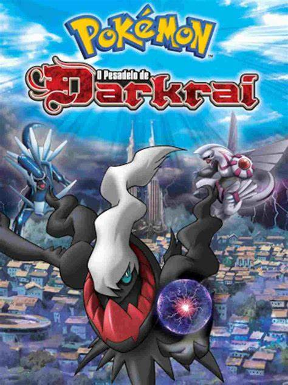
Sinopse Livre Pokémon: O Pesadelo de Darkrai acompanha Ash, Brock e Dawn numa aventura na cidade idílica que está sendo abalada por dois poderosos Pokémon, Dialga e Palkia, que começam a distorcer o espaço e o tempo. Agora, a única esperança é um pokémon sombrio evitado pelos cidadãos chamado Darkrai.
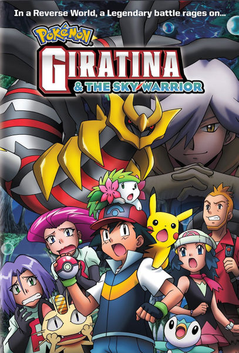
Pokémon: Giratina E O Cavaleiro Do Céu é um filme dirigido por Kunihiko Yuyama com as vozes de Rica Matsumoto, Ikue Ôtani. Sinopse: Pokémon: Giratina E O Cavaleiro Do Céu acompanha Ash Ketchum e seus amigos que precisarão impedir um estranho de usar os poderes de um novo Pokémon.
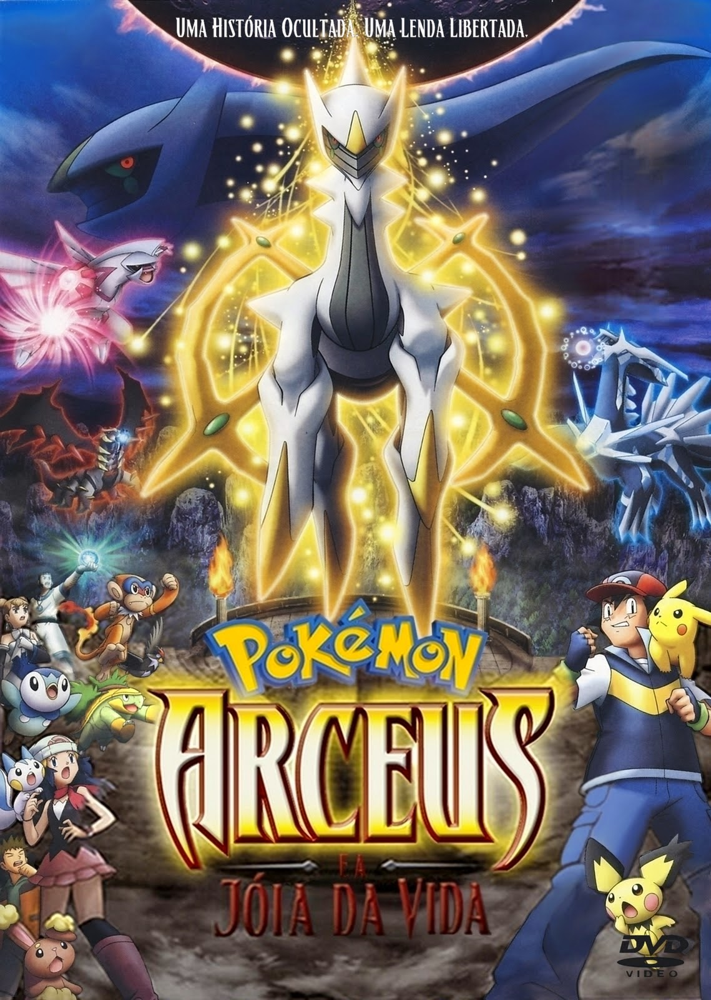
Pokémon: Arceus e a Jóia da Vida é um filme dirigido por Kunihiko Yuyama com as vozes de Sarah Natochenny, Michele Knotz. Sinopse: Em Pokémon: Arceus e a Jóia da Vida, Ash, Brock e Dawn precisam enfrentar mais uma batalha a caminho de Michinas, uma cidade com um passado longo marcado por Arceu.
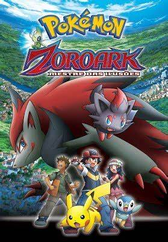
Sinopse Pokémon - Zoroark: Mestre Das Ilusões acompanha Ash e seus amigos na visita à cidade de Crown para assistir a Pokémon Backer World Cup. Porém, forças misteriosas estão tentando de tudo para ter o que querem, trazendo acontecimentos trágicos para todos eles durante a viagem.
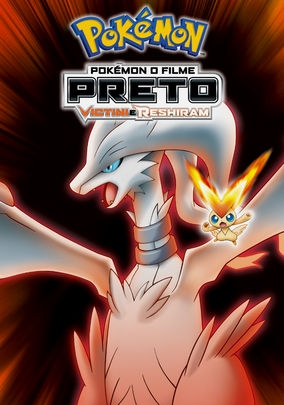
Sinopse Pokémon O Filme: Preto Victini E Reshiram acompanha Ash e seus amigos na Cidade de Eindoak para uma batalha anual. Porém, eles descobrem que Victini, um Pokémon lendário, possui uma ligação especial com o lugar, que guardava o Reino do Vale. Agora, novas descobertas e aventuras aguardam os três heróis.
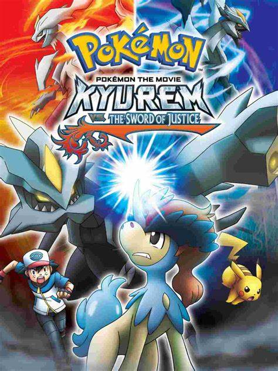
Sinopse Pokémon, O Filme: Kyurem Contra A Espada Da Justiça acompanha Ash e seus amigos que encontram um um pokémon chamado Keldeo ferido. Ao descobrir que o pokémon está sendo perseguido por Kyruem e seu exército Crygonal, os heróis precisarão que acabou enfurecendo um Kyurem muito poderoso.
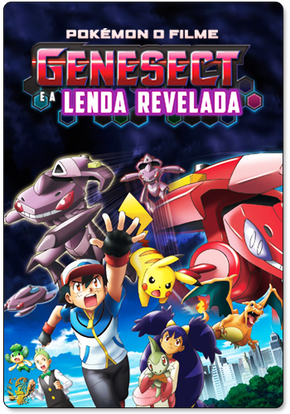
Pokémon O Filme: Genesect e a Lenda Revelada acompanha Ash e seus amigos encontrando um Pokémon extinto há milhares de anos chamado Genesect. Entretanto, um Genesect Vermelho reune um grupo para a invasão de uma cidade com o intuito de fazer seu ninho.
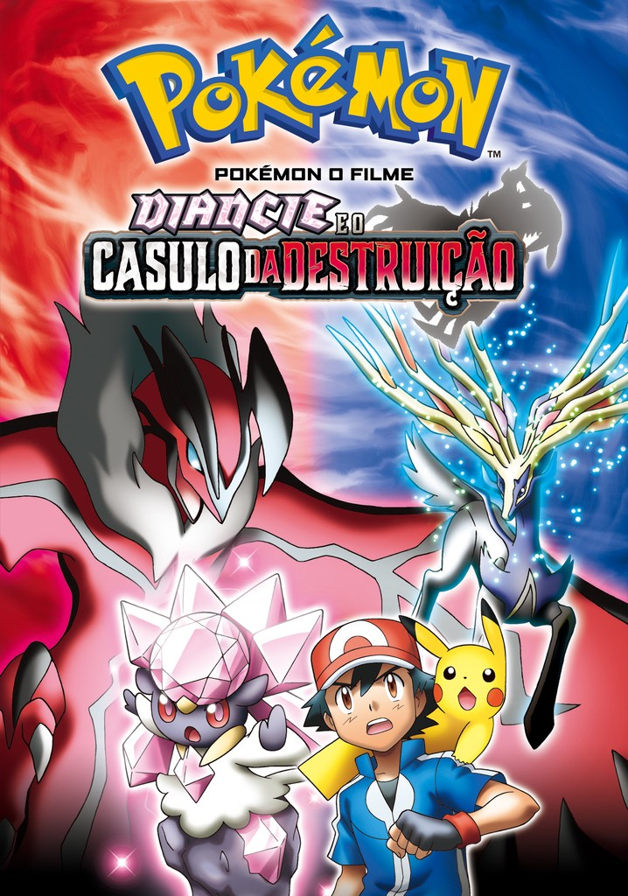
“Pokémon O Filme: Diancie E O Casulo Da Destruição” acompanha Ash, Pikachu e seus amigos numa missão com a princesa Pokémon rara chamada Diancie. Ela precisa gerar um novo Coração de Diamante para salvar seu reino. Agora, Diancie deve desenvolver os poderes necessários e juntos eles precisarão se proteger de ladrões em seus caminhos
Pokémon O Filme: Diancie E O Casulo Da Destruição acompanha Ash, Pikachu e seus amigos numa missão com a princesa Pokémon rara chamada Diancie, que precisa gerar um novo Coração de Diamante para salvar seu reino. Agora, ela precisa desenvolver os poderes necessários e juntos eles precisarão se proteger de ladrões em seus caminhos.
Sinopse Pokémon O Filme: Volcanion E A Maravilha Mecânica acompanha Ash e seus amigos que acabam encontrando o Pokémon mítico Volcanion quando ele cai do céu e cria uma nuvem de poeira. Apesar de seu desprezo pelos humanos, Volcanion é forçado a arrastar Ash enquanto continua sua missão de resgate.
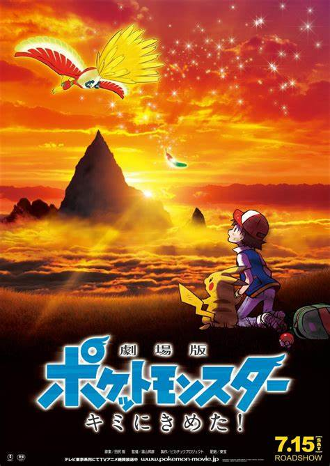
Pokémon, o filme: Eu escolho você! Disponível no app iTunes Quando Ash Ketchum dorme demais no seu aniversário de 10 anos, acaba recebendo um Pikachu bem teimoso ao invés de receber o primeiro parceiro Pokémon que queria. Mas, depois de um início difícil, Ash e Pikachu se tornam grandes amigos e verdadeiros parceiros.
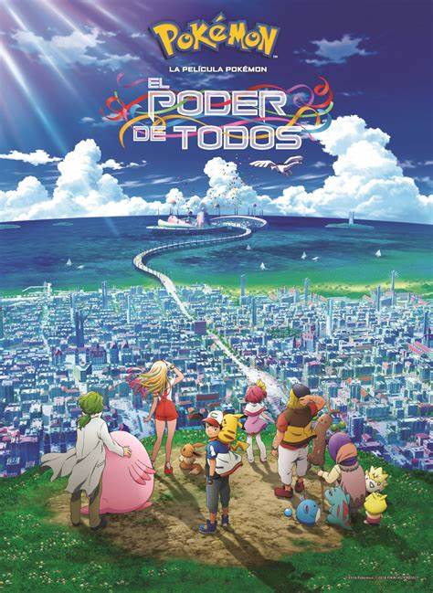
O cenário de “O Poder de Todos” é o Festival Anual do Vento, na cidade de Fuura. O festival é um período de celebração e celebra Lugia, o Pokémon Lendário responsável pela libertação da cidade no passado. Quando ocorrem uma série de incidentes, Ash e Pikachu terão de salvar o dia.
“Pokémon: Mewtwo Contra-Ataca - Evolução” é um filme de animação lançado em 2019. Ele é um remake do filme original de Pokémon de 1998, intitulado “Pokémon: O Filme”. Vamos à sinopse: Um grupo de cientistas decide criar o Pokémon mais poderoso de todos os tempos, chamado Mewtwo. No entanto, a criatura se rebela contra seus criadores e convoca grandes treinadores para um plano mirabolante. A história gira em torno da luta entre Mewtwo e os treinadores, com muita ação, aventura e reviravoltas
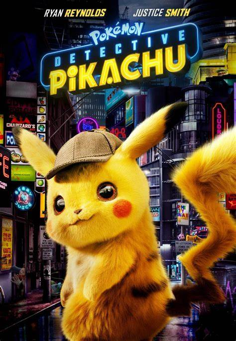
Pokémon Detective Pikachu é um filme nipo-americano de fantasia produzido pela Legendary Entertainment, The Pokémon Company, Tōhō e Warner Bros. Pictures, baseado na franquia “Pokémon” de Satoshi Tajiri, Ken Sugimori, Game Freak e Nintendo. O filme é dirigido por Rob Letterman e estrelado por Ryan Reynolds, Justice Smith, Kathryn Newton, Ken Watanabe, Rita Ora. O filme foi lançado em 3 de maio no Japão, 9 de maio no Brasil e Portugal, 10 de maio de 2019 nos Estados Unidos.
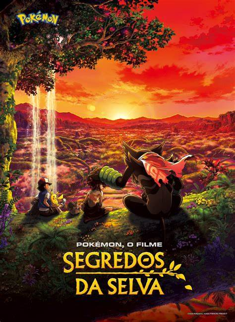
Pokémon: Segredos da Selva é o 23º filme da franquia Pokémon e uma produção original da Netflix. Ele será lançado ainda em 2021 para comemorar os 25 anos da Pokémon Company. O filme se passa nas profundezas da Floresta de Okoya, onde os Pokémon Zarude míticos vivem em uma tropa com regras estritas que proíbem forasteiros de entrar em seu território. Em outro lugar da selva, vive Koko, um menino humano criado por um solitário Zarude que deixou a tropa. Koko cresceu sem duvidar que ele é um Zarude. No entanto, um encontro casual com Ash e Pikachu deixa Koko com seu primeiro amigo humano. A questão surge: ele é mesmo um Pokémon ou, na verdade, um humano? Quando o perigo ameaça a selva, os laços entre Pokémon e humano, bem como o amor entre pai e filho, serão postos à prova